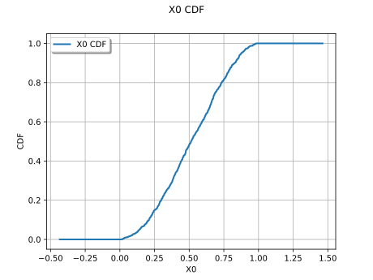

BestModelChiSquared¶
- BestModelChiSquared(*args)¶
Select the best model according to the
![\chi^2]() goodness-of-fit test.
goodness-of-fit test.- Parameters:
- sample2-d sequence of float
Tested sample.
- modelslist of
DistributionorDistributionFactory Tested distributions.
- Returns:
- best_model
Distribution The distribution that fits the sample best according to the test. This may raise a warning if the best model does not perform well.
- best_bic
Best test result.
- best_model
See also
Examples
>>> import openturns as ot >>> ot.RandomGenerator.SetSeed(0) >>> distribution = ot.Poisson() >>> sample = distribution.getSample(30) >>> tested_distributions = [ot.PoissonFactory(), ot.UserDefinedFactory()] >>> best_model, best_bic = ot.FittingTest.BestModelBIC(sample, tested_distributions) >>> print(best_model) Poisson(lambda = 1.06667)
Examples using the function¶

Select fitted distributions